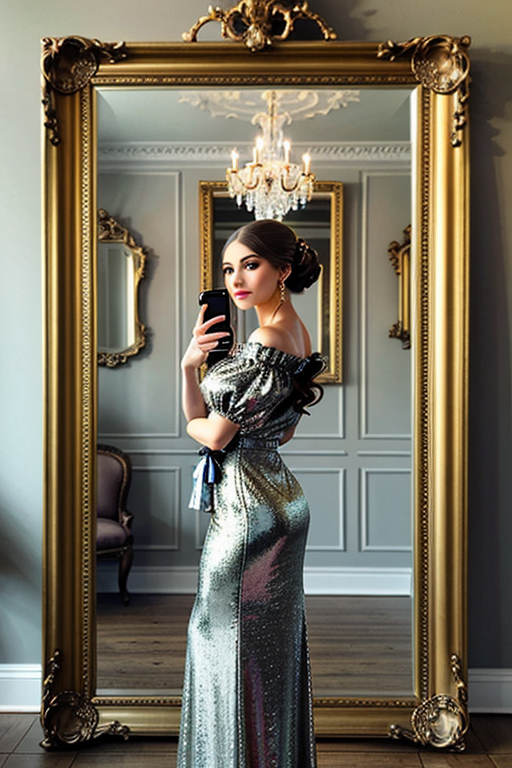
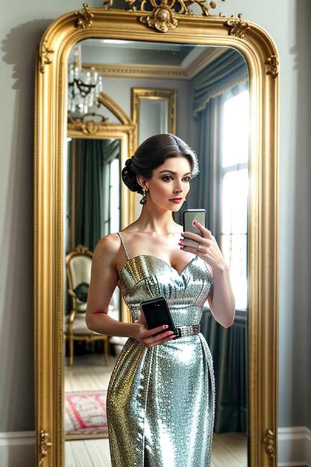
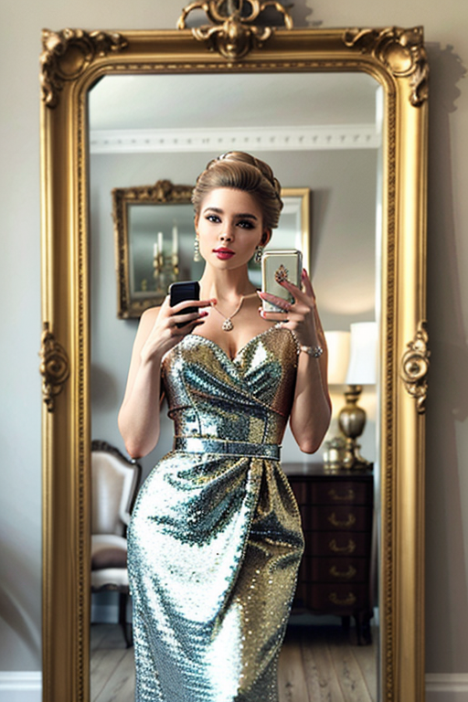
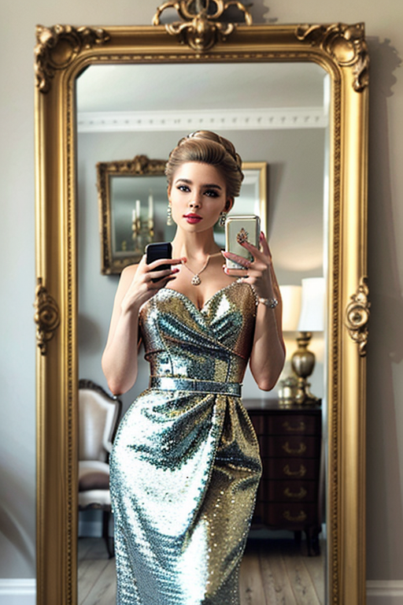
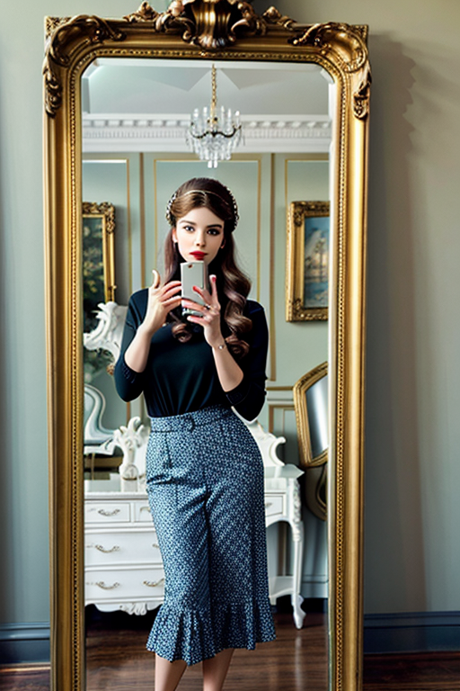
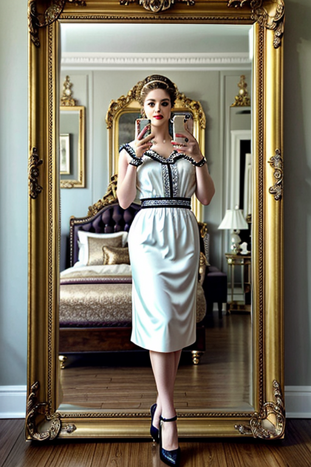
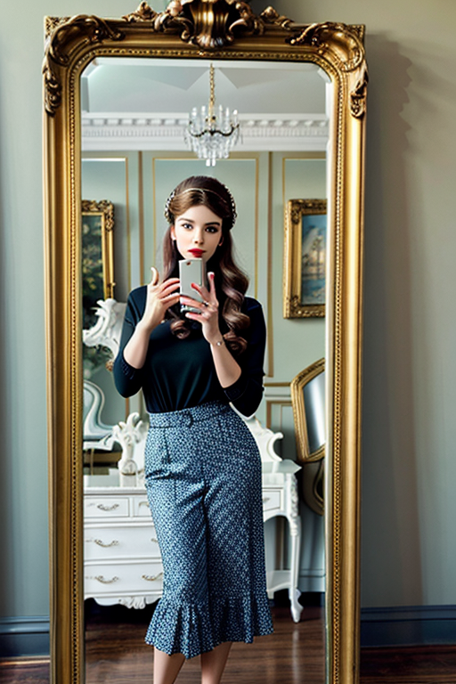
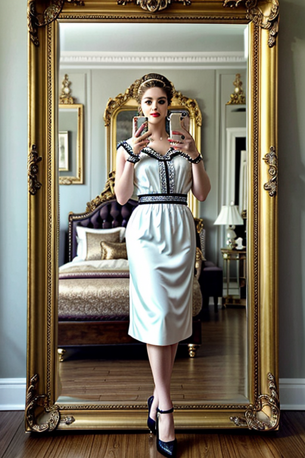

This set explores mirror girl daylight through modern aesthetics and elegant tone under golden-hour glow. Compositions use close-up with minimal set, keeping focus clear and tidy. Details like office styling and balanced colors make browsing easy.
Browse mirror images. Page 6 of curated mirror-style portrait collection.




 



 



Here we highlight page6, aiming for clean structure, quick scanning, and useful context. Alt text and headings are optimized to make the content accessible and to provide consistent cues across the site. Subtle differences in wording help avoid duplication across similar pages. Alt text and headings are optimized to make the content accessible and to provide consistent cues across the site. Subtle differences in wording help avoid duplication across similar pages. The image aims to deliver a straightforward visual impression while keeping the file lightweight. A brief explanation clarifies the subject and lighting so visitors can quickly decide where to go next. Internal navigation leads to related items with comparable tone or composition. This reduces bounce and supports exploration within the same theme. The image aims to deliver a straightforward visual impression while keeping the file lightweight. A brief explanation clarifies the subject and lighting so visitors can quickly decide where to go next.